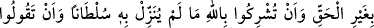
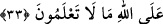
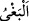

hakikatlerinden çıkarıp ortaya koyan O’dur. Allah Teâlâ, bedenleri hükümlerle ve
onların eserleriyle, nefisleri ise adâb ve onlara güç yetirmekle, kalbleri şevahid ve
onların nurlarıyla, ruhları ma‘rifetlerle ve onların esrârıyle, sırları ise tavali‘ (manevî
doğuşlar) ve onların meyveleri ile süslemiştir. Zahirleri tevfikın eserleriyle ve bâtınları
da hakîkat nurlarıyla süslemiştir. Dahası zâhirleri secde izleriyle, bâtınları da müşâhede
nurlarıyla bezemiştir. Nihayet zahirleri cömertliğin eserleriyle, bâtınları ise varlık
nurlarıyla ve temiz rızıklarla süslemiştir.
Nefislerin rızıkları, bizzat ihsanının hükmü gereğidir. Kalblerin rızıkları ise Allah’ın
yönelmesi gereğidir. Gerçek mânâda temiz ve helal rızık, nefsin haklarına ve hazlarına
karışmamış, bizzat ilâhî mevhibe ve O’nun hukukundan olan rızıktır.
“De ki: “O, dünyâ hayatında inananlarındır.” Yani bu ikramlar ve makamlar, dünya
hayatında nefsânî afetler ve hayvanî özelliklerle karışık olarak, ahirette ise bu tür afet
ve bulanıklıklardan arınmış olarak o seçilmiş kullar içindir. Nitekim Allah Teâlâ şöyle
buyurmuştur: “Göğüslerinden kinden (tasadan) ne varsa hepsini çıkarıp atmışızdır.”
(el-A‘râf, 7/43)
“İşte biz, bilen bir topluluk için ayetleri böyle açıklıyoruz.” Biz bu hükmü
açıkladığımız gibi diğer hükümleri de, içlerinde bulunan derin mânâları anlayıp
bilebilecek bir topluluk için açıklarız.
33. De ki: Rabbim ancak açık ve gizli kötülükleri, günahı ve haksız yere sınır
aşmayı, hakkında hiçbir delil indirmediği bir şeyi, Allah’a ortak koşmanızı ve Allah
hakkında bilmediğiniz şeyleri söylemenizi haram kılmıştır.
“De ki “Rabbim ancak kötülükleri” yani, çirkinliği çok açık ve fazla olan büyük
günahları “gerek açığını, gerek gizlisini” yani küfür, nifak ve diğer açık ve gizli bütün
kötülükleri, “günahı” yani, küçük ve büyük günaha sebebiyet verecek şeyleri “ve
haksız yere saldırmayı” yani, zulüm veya kibri haram kılmıştır. “” (haksız yere
saldırmak), günah kavramına dâhil olduğu halde ayrıca tekrar zikredilmesi, ondan
sakındırmak hususunda mübalağa içindir. Ayette “haksız yere” kaydı, “bağy”i (zulmü,
saldırmayı) te’kid için getirilmiştir. Çünkü haklı olarak zulüm yapılmaz.
Şirk koşulması ve ibâdet edilmesi “hakkında hiçbir delil” huccet, burhan
“indirmediği bir şeyi Allah’a ortak koşmanızı”
Burada müşriklerle alay ve onlara hakaret vardır. Çünkü Allah’a şirk koşmak
hususunda bir delilin indirilmesi mümkün olmadığına göre bunun zikredilmesi onlarla
alaydır, istihzadır. Bu konuda bir delil mevcut değildir ki indirilsin. “ve Allah hakkında